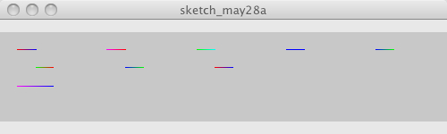

size(500, 100, P3D);
background(200);
beginShape(LINES);
stroke(255,0,0);vertex(20, 20);
stroke(0,0,255);vertex(40, 20);
stroke(0,255,0);vertex(40, 40);
stroke(255,0,0);vertex(60, 40);
stroke(0,0,255);vertex(60, 60);
stroke(255,0,255);vertex(20, 60);
endShape();
beginShape(LINES);
stroke(255,0,255);vertex(120, 20);
stroke(255,0,0);vertex(140, 20);
stroke(0,0,255);vertex(140, 40);
stroke(0,255,0);vertex(160, 40);
stroke(255,0,0);vertex(160, 60);
endShape();
beginShape(LINES);
stroke(0,255,0);vertex(220, 20);
stroke(0,255,255);vertex(240, 20);
stroke(255,0,0);vertex(240, 40);
stroke(0,0,255);vertex(260, 40);
endShape();
beginShape(LINES);
stroke(0,0,255);vertex(320, 20);
stroke(0,0,255);vertex(340, 20);
stroke(255,0,255);vertex(340, 40);
endShape();
beginShape(LINES);
stroke(0,0,255);vertex(420, 20);
stroke(0,255,0);vertex(440, 20);
endShape();